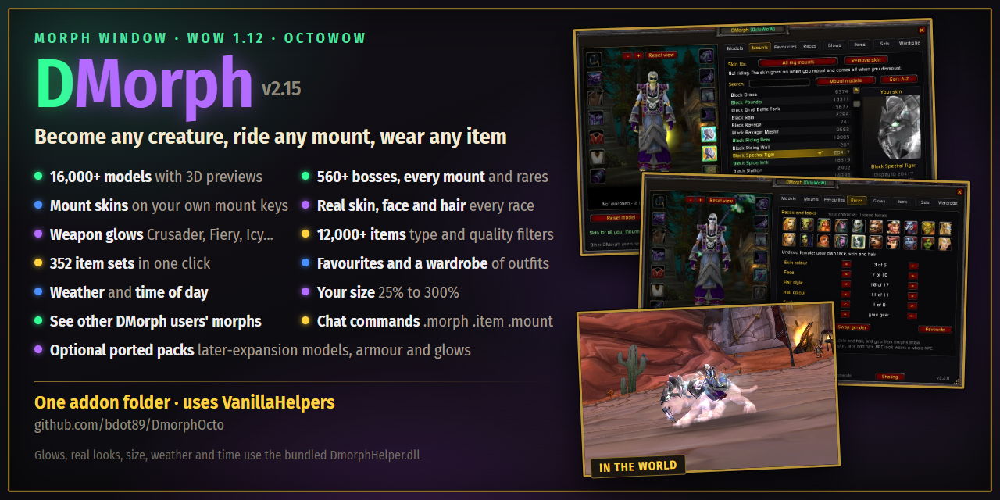
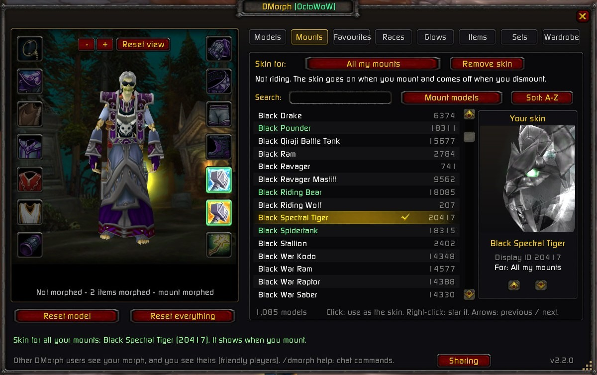
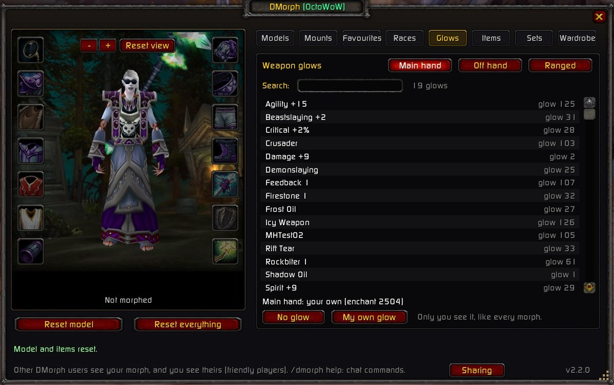
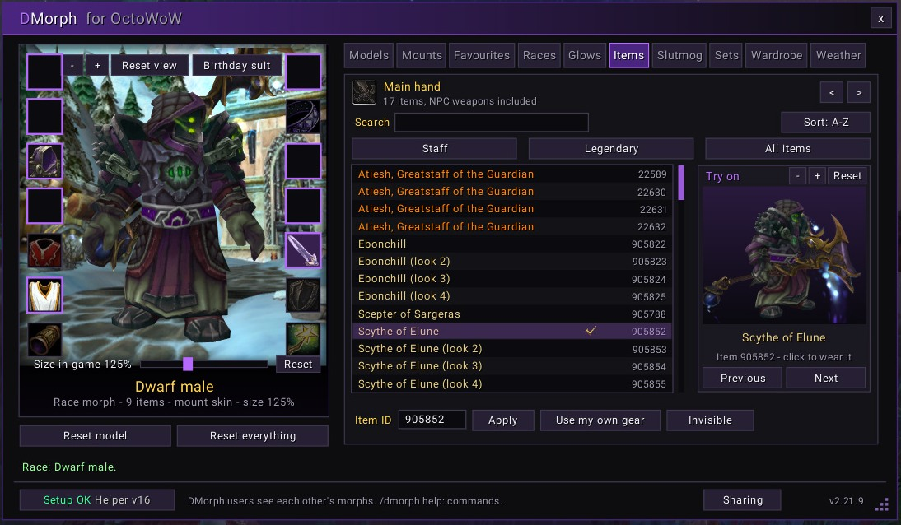
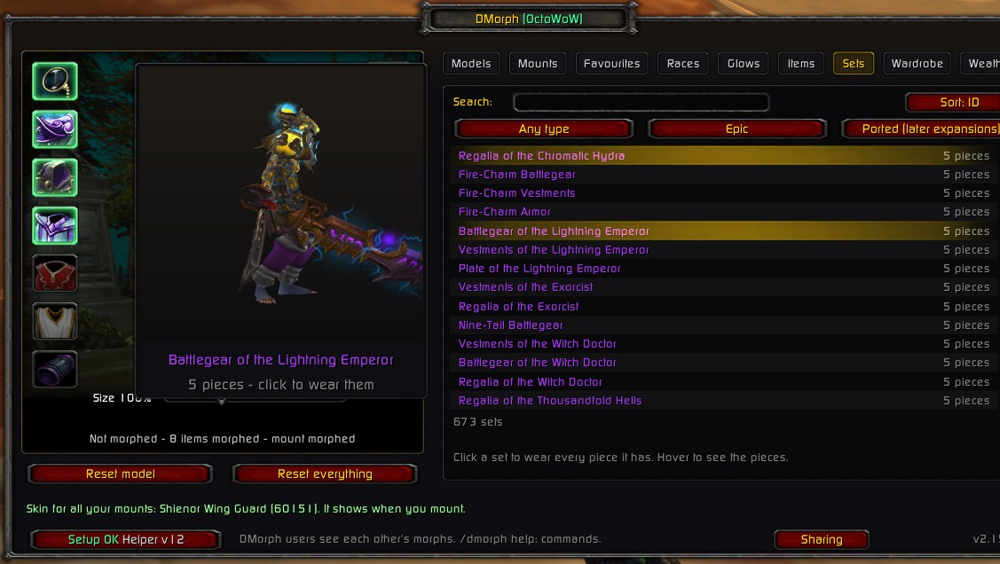
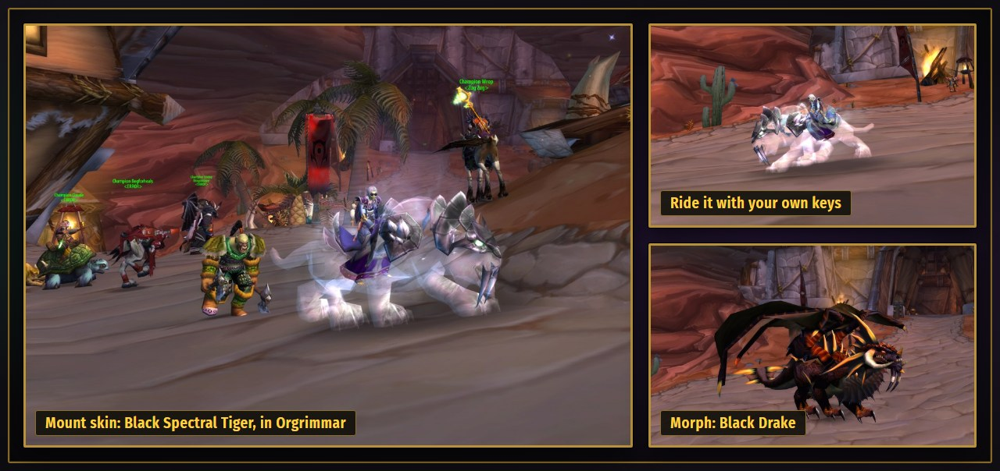

DMorph for OctoWoW
A morph window for WoW 1.12: become any creature, ride any mount, wear any item. Inspired by DMorph.
Features
- 16,000+ creature models with 3D previews, search, A-Z or ID sort
- 560+ bosses, every mount and rares as filters
- Mount skins: any model on your mount, mount and dismount with your own keys
- Real skin, face and hair for every race, one row at a time
- Weapon enchant glows: Crusader, Fiery, Icy and every glow in the game
- Weather: clear skies, rain, snow or a sandstorm, light to heavy, on your screen in every zone, and any time of day from dawn to midnight
- 12,000+ items with type, quality and source filters
- 352 item sets in one click, the last set's pieces come off
- Your size: 25% to 300%, seen by other DMorph users too
- Favourites and a wardrobe of saved outfits for all your characters
- See each other's morphs: DMorph users see each other's looks
- Race morphs keep your faction: languages, flight paths and friendly NPCs stay yours
- Optional ported packs: later-expansion models, mounts, armour, sets and 33 glows from TBC to Mists of Pandaria, shared privately between friends
- Zoom and turn your character in the dressing room
- DMorph's chat commands:
.morph.item.mount.glow - Checked against your game files: nothing in the lists turns invisible
Screenshots







Install
- In OctoLauncher, tick the vanillaHelpers mod.
- Download the ZIP, Extract All, rename the
DmorphOcto-mainfolder (the one withDmorphOcto.tocin it) to DmorphOcto, and move it intoOctoWoW\Interface\AddOns\. - Close the game, open that folder and double-click Install DmorphHelper.bat (if Windows warns you: More info, then Run anyway). It adds the glows, real skin, face and hair, the size slider, the weather and the time of day. Do it again after each update.
- Start the game from OctoLauncher and click the minimap button, or type
/dmorph. - The Setup button at the bottom of the window is green when it all works. Red? Click it: it says what isn't running and how to fix it.
Step by step, plus updating and fixes: the install guide.